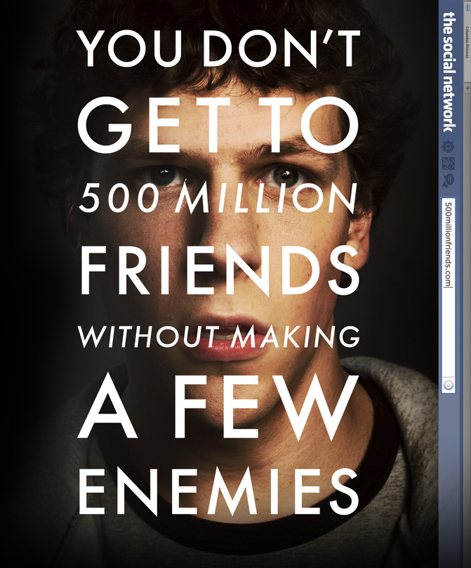

Overall I think this class has been a success. There are times when the class is more humid than outside, and Mama June and I are one in the same.

Although she doesn't know how to code, she does know how to raise kids properly. Even though we are not children Shaun, the greatest professor ever, may feel like he has to treat us like kids. No one said teaching was easy, just like coding isn't easy. I think that in order for someone to code they have to have a lot of patience and good vision. I am speaking from experience because when I look at a screen for an extended period of time , my head starts to hurt and so do my eyes. Coders and tech people, didn't want to say geek so I don't offend anyone, stare at screens all day and never seem to have an issue. I tip my hat to those that are commited gamers and tech civilians.



The video shown below was taken on July 4th. I was able to watch the Macy's firework show in NYC, since I was here for the summer. The fireworks were being launched 3 blocks from my apartment, hence the miraculous video. PSA: Please ignore the video due to the fact that my voice is horrendous on camera.
The link above is for a restaurant which I have never been too, yet is next to wear I watched the fireworks from! I recommend you checking out the restaurant and letting me know if it is good, as well as watching the fireworks from there.
Check out my post next week! Thanks for being great fans, I look forward to rocking Y'alls world again and again. Just rememeber life is a party, so always be VIP.